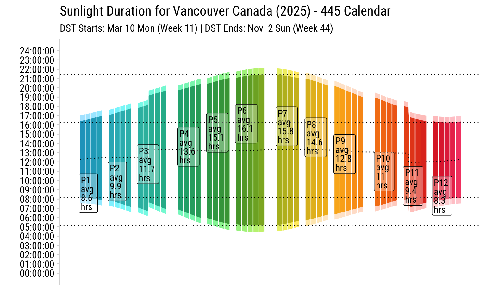
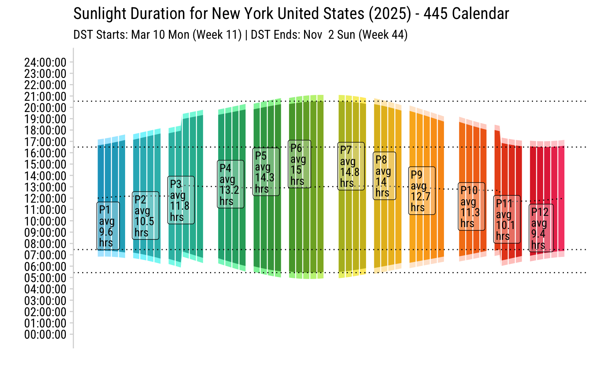
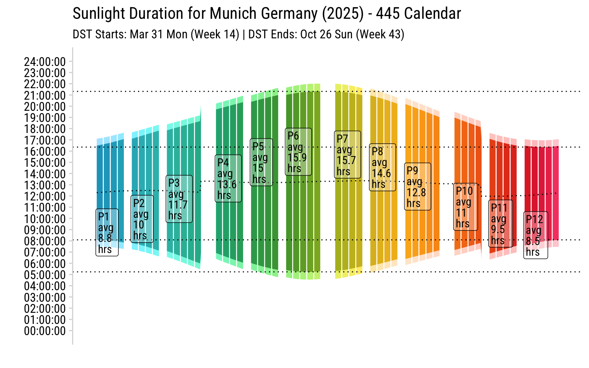
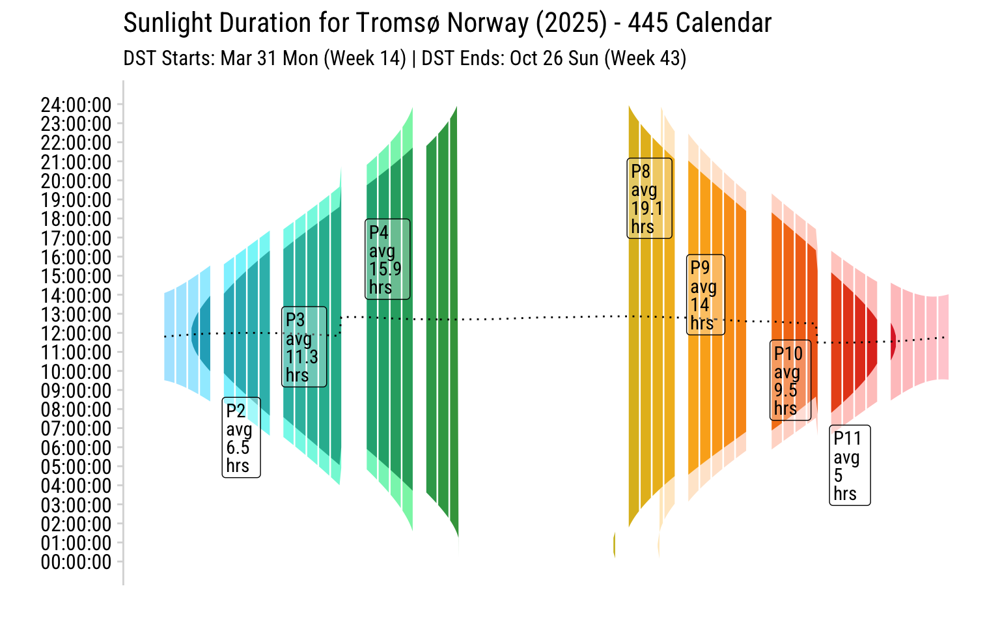
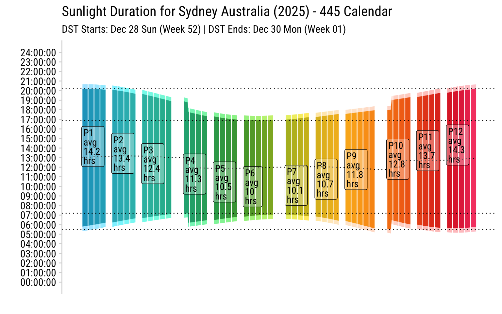
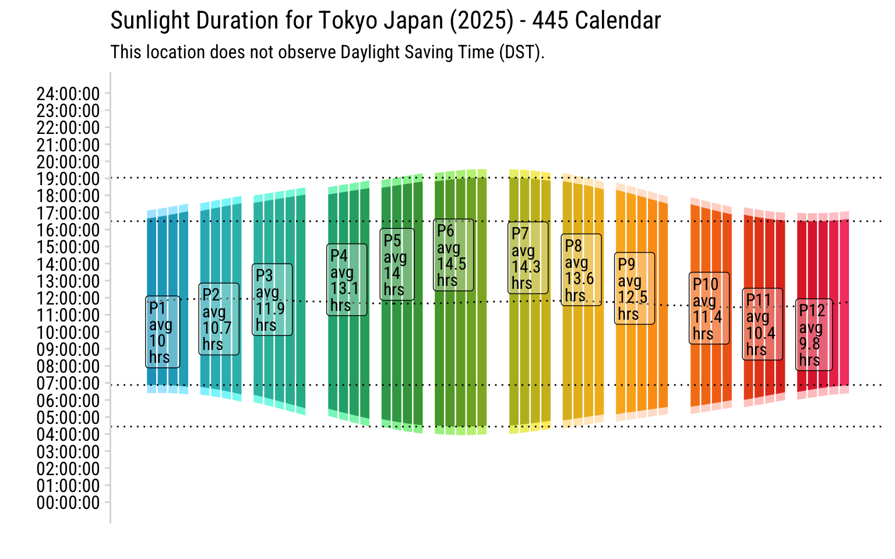
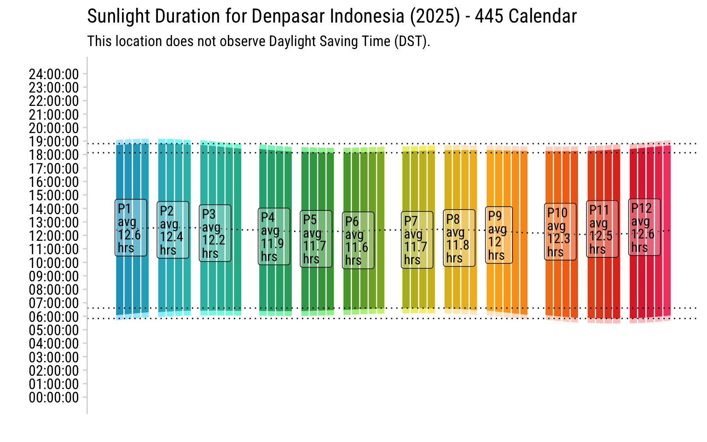

If you’ve worked in retail, you might already know that time isn’t always measured in standard months. Enter the 4-4-5 calendar: a reporting tool that divides a year into 12 periods, each organized into quarters of 4, 4, and 5 weeks (i.e. 13 weeks in each quarter). This structure ensures comparability across years by standardizing the length of each reporting period. (But yes, this isn’t perfect either—every 5-6 years, this produces a year with 53 weeks.)
Why Use a 4-4-5 Calendar?
Standard Gregorian calendars often lead to reporting headaches🤕, especially when months have varying lengths or different counts of weekends. The 4-4-5 calendar solves this by:
Aligning periods to weeks, making year-over-year comparisons simpler.
Standardizing reporting cycles, especially for weekly-driven industries like retail.
Providing flexibility with alternative formats, such as the 4-5-4 calendar, for specific business needs.
There’s also a sibling version👧🏻, the 4-5-4 calendar, which I personally prefer because it ensures that American Thanksgiving 🦃🎁 always falls within Period 11. In contrast, the 4-4-5 calendar may place Thanksgiving in Period 11 or 12, depending on the year.
Building a Custom 4-4-5 Calendar in R
To create a reusable tool, I developed the create_calendar function. This function takes a year and a calendar type (“445” or “454”) and returns a detailed tibble with dates, weeks, periods, and quarters. Function takes the year, and returns calendar as data frame.
Create Calendar Function
create_calendar <-function(year, calendar_type ="445", col_pal =NULL, ...) {if (is.null(col_pal)) { col_pal <- ggthemes::tableau_color_pal("Hue Circle")(19)[c(1:13)] } cal <-tibble(dt =seq.Date(ymd(paste0(year-1, "-12-01")), ymd(paste0(year, "-12-31")), by ="day") ) wpq <-switch(calendar_type,"445"=tibble(wk =1:53,p =sort(c(rep(1:12, each =4), c(3, 6, 9, 12, 12))),q =sort(c(rep(1:4, each =13), c(4))) ),"454"=tibble(wk =1:53,p =sort(c(rep(1:12, each=4), c(2, 5, 8, 11, 12))),q =sort(c(rep(1:4, each =13), c(4))) ),stop("Invalid calendar type. Choose '445' or '454'.") ) cal <- cal |>mutate(yr =isoyear(dt),wk =isoweek(dt),wday =wday(dt, label =TRUE,week_start =getOption("lubridate.week.start", 1)) ) |>left_join(wpq, by ="wk") |>mutate(color_num=wk + p + q) |>mutate(color_wk = colourvalues::color_values(color_num, palette=farver::decode_colour(col_pal))) |>filter(yr==year)return(cal)}
Making the Visual Calendar
Using ggplot2, we can create a visual representation of the calendar. The plot organizes weeks within periods and highlights each period in a grid layout.
While the 4-4-5 calendar does simplifies retail reporting, timekeeping isn’t always that straightforward. I’ve taken things up a notch and explore how sunlight, time zones, and Daylight Saving Time adds extra complexity.
Up the Complication of Timekeeping by a Few Notches
At first glance, keeping track of time seems simple 💡—but dig deeper, and it’s anything but. Add time zones, daylight saving time (DST), and patterns of sunlight to the mix, and you’ve just cranked the complexity up to expert mode. 😅
I don’t think I’ve solved this puzzle perfectly yet, but here’s my attempt using R’s suncalc package to visualize sunlight data alongside our trusty 4-4-5 calendar.
Sunlight Length Plot Creation
## install.package if you don't have it installed. library(suncalc)# Predefined city list with lat/lon & timezones. # To see full listing of available timezones, OlsonNames()### Creation of cities tibblecities <-tibble(city =c("Vancouver", "Toronto", "New York", "Chicago", "Los Angeles", "Tokyo", "Paris", "London", "Munich","Sydney", "Mumbai", "Cape Town", "Moscow", "São Paulo","Denpasar", "Lima", "Dubai", "Bangkok", "Istanbul","Reykjavik", "Tromsø", "Buenos Aires", "Cairo", "Anchorage" ),country =c("Canada", "Canada", "United States", "United States", "United States","Japan", "France", "United Kingdom", "Germany","Australia", "India", "South Africa", "Russia", "Brazil","Indonesia", "Peru", "United Arab Emirates", "Thailand", "Turkey","Iceland", "Norway", "Argentina", "Egypt", "United States" ),lat =c(49.246292, 43.65107, 40.712776, 41.878113, 34.052235, 35.689487, 48.856613, 51.507222, 48.135124,-33.868820, 19.076090, -33.924870, 55.755825, -23.550520,-8.650000, -12.046374, 25.276987, 13.756331, 41.008240,64.1466, 69.6496, -34.603722, 30.044420, 61.218056 ),lon =c(-123.116226, -79.347015, -74.005974, -87.629799, -118.243683, 139.691711, 2.352222, -0.1275, 11.581981,151.209290, 72.877426, 18.424055, 37.617298, -46.633308,115.216667, -77.042793, 55.296249, 100.501762, 28.978359,-21.9426, 18.9560, -58.3816, 31.2357, -149.900278 ),tz =c("America/Vancouver", "America/Toronto", "America/New_York", "America/Chicago", "America/Los_Angeles", "Asia/Tokyo", "Europe/Paris", "Europe/London", "Europe/Berlin", "Australia/Sydney", "Asia/Kolkata", "Africa/Johannesburg", "Europe/Moscow", "America/Sao_Paulo", "Asia/Makassar", "America/Lima", "Asia/Dubai", "Asia/Bangkok", "Europe/Istanbul","Atlantic/Reykjavik", "Europe/Oslo", "America/Argentina/Buenos_Aires", "Africa/Cairo", "America/Anchorage" ))# Generalized function visualize_sunlight <-function(city_name, year) {# Find city details#city_name <- ("Vancouver, BC")#year <- 2025 city <- cities %>%filter(city == city_name)if (nrow(city) ==0) stop("City not found in predefined list.")# Get sunlight data for the year sunlight_data <-create_calendar(year = year) %>%pull(dt) %>%map_dfr(~getSunlightTimes(date = ., lat = city$lat, lon = city$lon, tz = city$tz)) %>%as_tibble() %>%mutate(daylight_dur =as.duration(sunrise %--% sunset),across(where(is.POSIXct), list(time =~ lubridate::hms(format(ymd_hms(.), "%H:%M:%S")))) )# Add calendar columns sunlight_data <- sunlight_data %>%bind_cols(create_calendar(year = year))# Summarise by Period p_summary <- sunlight_data |>group_by(p) |>summarise(across(c(dt:color_num), list(min =~min(.), max =~max(.))),avg_dur =mean(daylight_dur) ) |>mutate(avg_dur_seconds =as.numeric(avg_dur), # Convert duration to secondsavg_dur_hours = avg_dur_seconds /3600, # Convert seconds to hoursdescr =str_glue("P{p}\n{format(dt_min, '%Y %b %e')} - {format(dt_max, '%Y %b %e')}\n","Avg Daylight: {round(avg_dur_hours, 2)} hours" ) ) |>relocate(p, descr)# Detect DST start and end dst_info <-tibble(date = sunlight_data$date,is_dst =with_tz(ymd_hms(paste(date, "00:00:00")), tzone = city$tz) %>%dst() ) %>%filter(is_dst) %>%filter(max(date)==date|min(date)==date)# Dynamically create subtitleif (nrow(dst_info) ==0) { subtitle <-"This location does not observe Daylight Saving Time (DST)." } else { dst_start <-if_else(city$lat>0,min(dst_info$date),max(dst_info$date)) dst_end <-if_else(city$lat>0,max(dst_info$date),min(dst_info$date)) subtitle <-str_glue("DST Starts: {format(dst_start, '%b %e %a (Week %V)')} | DST Ends: {format(dst_end, '%b %e %a (Week %V)')}") }# Generate the plotggplot(sunlight_data, aes(x =as.numeric(color_num) +as.numeric(wday) /7)) +geom_ribbon(aes(ymin = dawn_time, ymax = dusk_time, fill =I(colorspace::lighten(color_wk, 0.7)))) +geom_ribbon(aes(ymin = sunrise_time, ymax = sunset_time, fill =I(color_wk))) +geom_line(aes(y = solarNoon_time), linetype =3) +scale_x_continuous(breaks =NULL) + cowplot::theme_minimal_vgrid(font_family ="Roboto Condensed") +geom_hline(yintercept =max(as.numeric(sunlight_data$sunrise_time)), color ="black", linetype =3) +geom_hline(yintercept =min(as.numeric(sunlight_data$sunrise_time)), color ="black", linetype =3) +geom_hline(yintercept =max(as.numeric(sunlight_data$sunset_time)), color ="black", linetype =3) +geom_hline(yintercept =min(as.numeric(sunlight_data$sunset_time)), color ="black", linetype =3) +scale_y_continuous(labels =~ hms::as_hms(.),breaks =seq(0, 24*3600, by =3600), # Hourly breakslimits =c(0, 24*3600) ) +labs(x ="",y ="",title =str_glue("Sunlight Duration for {city_name} {city$country} ({year}) - 445 Calendar"),subtitle = subtitle ) +geom_label(aes(x=color_num_min, y=avg_dur_seconds, label=str_c("P",p,"\navg\n", round(avg_dur_hours,1),"\nhrs")),data = p_summary, family="Roboto Condensed", lineheight=0.8, hjust=0, fill="#ffffff50")}
Vancouver 🇨🇦🌲⛰️ Daylight Saving Time: DST is observed from March to November. Summer days are long (about 16 hours) while winter days are short (about 8 hours). 👩🏻🏫 There are more than twice as many daylight hours on the summer solstice than on the winter one.
Code
visualize_sunlight("Vancouver", 2025)

New York 🇺🇸🗽🏙 Daylight Saving Time: DST is observed from March to November, just like Vancouver. About 15 hours in the summer and about 9.4 hours in the winter, New York’s patterns are slightly less pronounced than Vancouver’s but still notable.
Code
visualize_sunlight("New York", 2025)

Munich 🇩🇪🍺🏰 Daylight Saving Time: Commences in late March and concludes in late October. Sunlight: Summer days last approximately 16 hours, while winter days last approximately 8.5 hours.
Code
visualize_sunlight("Munich", 2025)

Tromsø 🇳🇴❄️🌌 **Tromsø’s graph below is broken due to the sun setting after midnight during the summer (a phenomenon called the midnight sun), and I didn’t think through on these edge cases while creating ggplot2!
Daylight Saving: Starts last Sunday in March, ends last Sunday in October in Norway. That said, Tromsø (and other places in the Arctic Circle) experience midnight sun and polar night - So DST has no actual practical effect??!
Code
visualize_sunlight("Tromsø", 2025)

Sydney 🇦🇺🌊🐨 Daylight Saving: Starts first Sunday in October, ends first Sunday in April as seen on the glitch on visual below. I didn’t quite get the extraction of DST accurately in my function, so subtitle still isn’t accurate… 😅 🙀Another interesting thing I learned is that Not all states observe DST in Australia 🇦🇺! This creates a patchwork of timezones during the summer in Australia!
Code
visualize_sunlight("Sydney", 2025)

Tokyo 🇯🇵🏙️🌸 Daylight Saving: Japan doesn’t observe DST (Since 1952). Most of Japan experiences consistent sunrise and sunset times throughout the year, making DST less beneficial.
Code
visualize_sunlight("Tokyo", 2025)

Denpasar 🇮🇩🌴🌊 Like the rest of Indonesia, Bali does not observe DST. The daylight time remains constant throughout the year due to its tropical, equatorial location thoughout the year. So there’s really no need for DST.
Code
visualize_sunlight("Denpasar", 2025)

Cairo 🇪🇬🕌🐪 Daylight Saving: Unlike Canada or US, DST transition occurs on Friday in Late April and Thursdays in Late October, instead of more typical Sunday.
What started as a simple exploration of the 4-4-5 calendar turned into a wild ride through the quirks of time—daylight saving oddities, cultural twists, and even the midnight sun.
I love these “useless trivias,” but they’re a reminder that time isn’t just ticking numbers on a clock—it’s shaped by geography, culture, and sometimes even political drama. This was a fun wake-up call (pun intended) that time is more complex, and entertaining? than we think!!